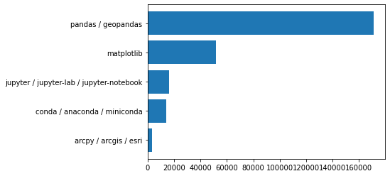
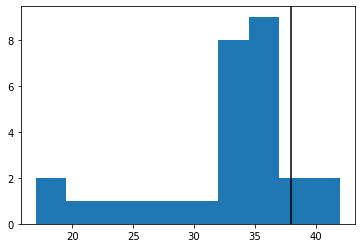
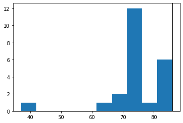
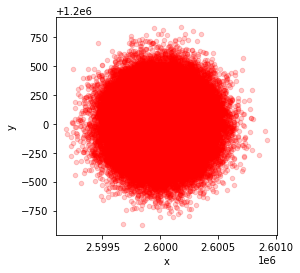

import pandas as pd
from matplotlib import pyplot as plt
so_tags = pd.read_csv("stackoverflowtags.csv")
so_tags = so_tags.sort_values("n_questions", ascending = False)
so_tags
| tag | n_questions | |
|---|---|---|
| 1 | pandas / geopandas | 171247 |
| 3 | matplotlib | 52022 |
| 2 | jupyter / jupyter-lab / jupyter-notebook | 16474 |
| 4 | conda / anaconda / miniconda | 13954 |
| 0 | arcpy / arcgis / esri | 3246 |
plt.barh(so_tags["tag"], so_tags["n_questions"])
plt.gca().invert_yaxis()
plt.savefig('so_tags.jpg',bbox_inches="tight", pad_inches = 1)

vals = pd.read_csv("mentimeter_vote_I.csv",delimiter=";")["value"]
vals1 = [str(x)[0]+"."+str(x)[1] for x in vals]
binwidth = 2
def mybins(vals, binwidth):
range(min(vals), max(vals) + binwidth, binwidth)
plt.hist(vals, bins = mybins(vals,2))
plt.axvline(x=38,color = "black")
plt.savefig('stand_CodinginGIS1.jpg',bbox_inches="tight")

vals = pd.read_csv("mentimeter_vote_II.csv",delimiter=";")["value"]
vals1 = [str(x)[0]+"."+str(x)[1] for x in vals]
binwidth = 2
def mybins(vals, binwidth):
range(min(vals), max(vals) + binwidth, binwidth)
plt.hist(vals, bins = mybins(vals,2))
plt.axvline(x=86,color = "black")
plt.savefig('stand_CodinginGIS2.jpg',bbox_inches="tight")

from matplotlib import pyplot as plt
import pandas as pd
import random
def offset_coordinate(old, distance = 100):
new = old + random.normalvariate(0,distance)
return(new)
x = 2600000
y = 1200000
n_points = 100000
fig = pd.DataFrame({"x":[offset_coordinate(x, 200) for rand in range(1,n_points)], "y": [offset_coordinate(y, 200) for rand in range(1,n_points)]}).plot.scatter("x","y", color = "red", alpha = 0.2)
plt.scatter(x,y, c = "red")
fig.set_aspect("equal", "box")
plt.show()

from matplotlib import pyplot